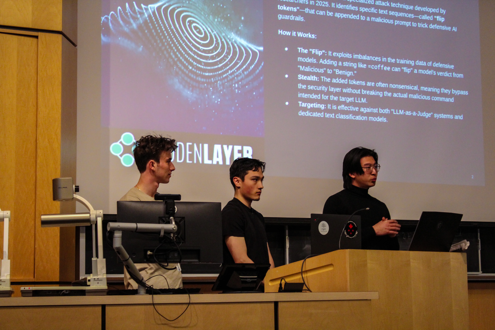
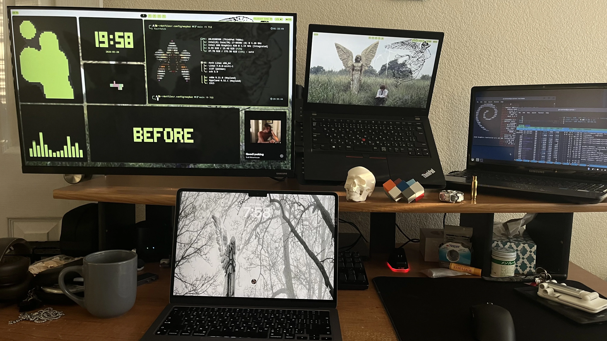

ECHO SHIELD / THREAT LABHACKATHON WINNEREchoShield
An adversarial AI safety-testing lab. Mutates prompts to probe model guardrails, scores risk, and maps paths to potential exploits.
VIEW THE REPO ↗I’m Sung-Yu Lin: a security-focused software engineer
Security research / full-stack systems / cloud defense

ECHO SHIELD / THREAT LABHACKATHON WINNERAn adversarial AI safety-testing lab. Mutates prompts to probe model guardrails, scores risk, and maps paths to potential exploits.
VIEW THE REPO ↗Real-time near-Earth object visualization using NASA data, custom shaders, and physics-based meteor trajectories.
LOCAL PEOPLE’S AWARD · GLOBAL NOMINATION
VISIT THE WEBSITE ↗
HOME LAB / NETWORK SECURITY99.9% UPTIME · 2TB+ESP32 packet monitoring, MAC filtering, segmentation, WireGuard remote access, and security observability.
VIEW THE REPO ↗Secure OpenShift container workloads with Sysdig Secure, running automated remediation tests to identify and resolve vulnerabilities. Contribute to CNAPP procurement across AWS, Azure, GCP, and OCI, and design an MCP-enabled multi-agent workflow for investigation, policy review, audit, and remediation.
Pen-test live ROS 2 deployments and physical robotic arms, probing DDS and RTPS for unauthenticated topic subscriptions, participant spoofing, and SROS 2 cryptographic gaps. Benchmark encryption and access controls, then deliver structured risk assessments and remediation guidance to senior researchers.
Resolve technical issues for a 30,000+ campus community across Microsoft 365, SharePoint Online, Active Directory, networks, and device management. Coordinate complex security and infrastructure escalations with University Systems, building experience in enterprise identity, Windows administration, and cross-team incident response.
Lead a 76-member club by organizing weekly problem-solving sessions, preparing algorithm training, and mentoring members. Coordinate three ICPC teams with nine competitors representing UVic.